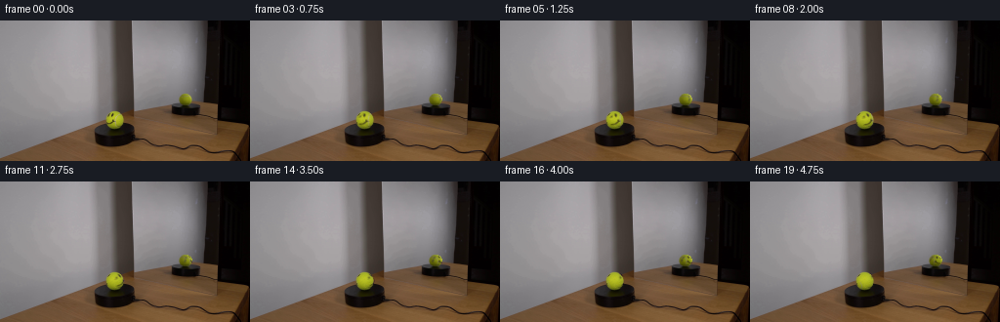
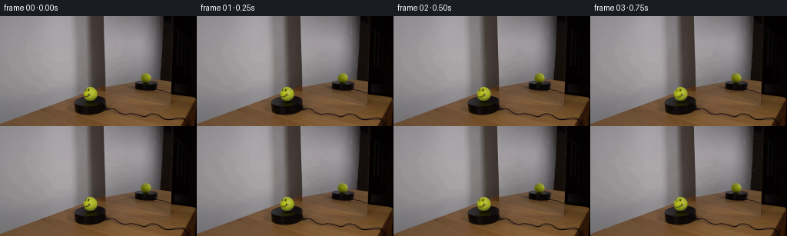

CODING AGENTS AS PIXEL WORLD MODELS
traex/GPT-6.1-Sol · 0119
点击播放 · 原生 RGB 像素
逐轮保存的候选
回放视频、检查图与代码变化。
每份候选均可单独播放。实际图片检查记录在下方工具轨迹中。
候选 01播放与检查图
点击播放 · 原生 RGB 像素

展开代码变化
--- 上一保存版本
+++ 本次保存版本
@@ -0,0 +1,143 @@
+from pathlib import Path
+import numpy as np
+from PIL import Image
+from scipy.ndimage import map_coordinates, gaussian_filter
+from scipy.spatial.transform import Rotation
+import artifact_io
+
+ROOT=Path(__file__).resolve().parent
+FIRST=np.asarray(Image.open(ROOT/'first_frame.png').convert('RGB')).astype(np.float64)
+ALPHA=np.deg2rad(17.0)
+CA,SA=np.cos(ALPHA),np.sin(ALPHA)
+PHI=np.deg2rad(115.0)
+# The two fixed views of one upright sphere; the second view has mirrored parity.
+VIEWS=[(117.7,101.5,9.3,9.1,0.0,False),(190.0,80.7,6.75,6.2,PHI,True)]
+SEAM_R=Rotation.from_rotvec([-2.24601365,-2.18839824,2.46785786]).as_matrix()
+SEAM_P=np.array([.2,-.07527221,-.38139899,-.08591131,.06929056])
+
+def rotate(n,a):
+ c,s=np.cos(a),np.sin(a)
+ return np.stack([c*n[...,0]+s*n[...,2],n[...,1],-s*n[...,0]+c*n[...,2]],-1)
+
+def normals(x,y,view):
+ cx,cy,rx,ry,phi,mir=view
+ u=(x-cx)/rx *(-1 if mir else 1)
+ v=(cy-y)/ry
+ rad=u*u+v*v
+ z=np.sqrt(np.maximum(0,1-rad))
+ n=np.stack([u,CA*v+SA*z,CA*z-SA*v],-1)
+ return rotate(n,phi),rad
+
+def project(n,view):
+ cx,cy,rx,ry,phi,mir=view
+ q=rotate(n,-phi)
+ u=q[...,0]*(-1 if mir else 1)
+ v=CA*q[...,1]-SA*q[...,2]
+ z=SA*q[...,1]+CA*q[...,2]
+ return cx+rx*u,cy-ry*v,z
+
+def sample(tex,x,y):
+ if tex.ndim==3:
+ return np.stack([map_coordinates(tex[...,k],[y,x],order=1,mode='constant',cval=0) for k in range(tex.shape[-1])],-1)
+ return map_coordinates(tex,[y,x],order=1,mode='constant',cval=0)
+
+def base_fit(view):
+ yy,xx=np.mgrid[:144,:256]
+ cx,cy,rx,ry,phi,mir=view
+ u=(xx-cx)/rx;v=(cy-yy)/ry;z=np.sqrt(np.clip(1-u*u-v*v,0,1))
+ a=np.stack([np.ones_like(u),u,v,z,u*v,u*u,v*v],-1)
+ m=(u*u+v*v<.88**2)&(FIRST[...,1]>65)&(FIRST[...,2]<.38*FIRST[...,1])
+ for j in range(6):
+ c=np.linalg.lstsq(a[m],FIRST[m],rcond=None)[0]
+ fit=a@c
+ err=FIRST-fit
+ m=(u*u+v*v<.92**2)&(abs(err[...,0])<9)&(abs(err[...,1])<9)&(abs(err[...,2])<10)
+ return np.clip(fit,0,255),u*u+v*v
+
+YY,XX=np.mgrid[:144,:256]
+FIT=[];INK=[];SEAM=[];OWN=[];LIGHT=[]
+for vi,view in enumerate(VIEWS):
+ fit,rad=base_fit(view)
+ residual=FIRST-fit
+ illum=np.clip(fit[...,1]/190,.3,1.1)
+ if vi==0:
+ eyes=(YY>=94)&(YY<=99)&(XX>=109)&(XX<=116)
+ mouth=(YY>=101)&(YY<=106)&(XX>=109)&(XX<=118)
+ inkregion=(eyes|mouth)&(rad<.94**2)
+ # Remove the written black marks, keeping the sphere's original illumination.
+ k=np.clip((fit[...,0]+fit[...,1]-FIRST[...,0]-FIRST[...,1]-7)/16,0,1)*inkregion
+ ink=residual*k[...,None]
+ else:
+ ink=np.zeros_like(FIRST)
+ seamweight=np.clip((residual[...,2]-9)/12,0,1)*(rad<.97**2)
+ if vi==0:
+ seamweight*=1-np.clip(np.max(-ink,axis=-1)/15,0,1)
+ seam=residual*seamweight[...,None]
+ # Colour deviations are stored as albedo, not screen-attached shaded drawings.
+ FIT.append(fit);INK.append(ink/illum[...,None]);SEAM.append(seam/illum[...,None]);OWN.append(ink+seam);LIGHT.append(illum)
+
+# Analytic continuation of the tennis-ball seam outside the initially visible surface.
+def seam_analytic(n):
+ q=n@SEAM_R
+ lon=np.arctan2(q[...,2],q[...,0]); lat=np.arcsin(np.clip(q[...,1],-1,1))
+ p=SEAM_P
+ f=lat-(p[0]+p[1]*np.sin(2*lon)+p[2]*np.cos(2*lon)+p[3]*np.sin(4*lon)+p[4]*np.cos(4*lon))
+ deriv=2*p[1]*np.cos(2*lon)-2*p[2]*np.sin(2*lon)+4*p[3]*np.cos(4*lon)-4*p[4]*np.sin(4*lon)
+ dist=f/np.sqrt(1+(deriv/np.maximum(.15,np.cos(lat)))**2)
+ a=np.exp(-.5*(dist/.040)**2)
+ return a[...,None]*np.array([-13.,-18.,65.])
+
+# Precompute fixed sampling grids and stationary lighting for each ball image.
+PATCHES=[]
+SS=5
+for vi,view in enumerate(VIEWS):
+ cx,cy,rx,ry,_,_=view
+ x0=int(np.floor(cx-rx-2));x1=int(np.ceil(cx+rx+2));y0=int(np.floor(cy-ry-2));y1=int(np.ceil(cy+ry+2))
+ yy,xx=np.meshgrid(y0+(np.arange((y1-y0)*SS)+.5)/SS-.5,x0+(np.arange((x1-x0)*SS)+.5)/SS-.5,indexing='ij')
+ n,rad=normals(xx,yy,view)
+ # Subpixel silhouette. No object is translated and no platform pixels change.
+ cover=(rad<=.985**2).astype(float)
+ light=sample(LIGHT[vi],xx,yy)
+ PATCHES.append((x0,x1,y0,y1,n,cover,light))
+
+def texture(n,vi):
+ # All ink is on the same material surface, also sampled by the reflected view.
+ xm,ym,zm=project(n,VIEWS[0])
+ ik=sample(INK[0],xm,ym)*np.clip((zm-.10)/.20,0,1)[...,None]
+ xs,ys,zs=project(n,VIEWS[vi])
+ sm=sample(SEAM[vi],xs,ys)
+ known=np.clip((zs-.12)/.20,0,1)
+ if vi==0:
+ xo,yo,zo=project(n,VIEWS[1]);other=sample(SEAM[1],xo,yo)
+ else:
+ xo,yo,zo=xm,ym,zm;other=sample(SEAM[0],xo,yo)
+ otherknown=np.clip((zo-.15)/.25,0,1)
+ continuation=other*otherknown[...,None]+seam_analytic(n)*(1-otherknown[...,None])
+ return ik+sm*known[...,None]+continuation*(1-known[...,None])
+
+def layer(angle,vi):
+ x0,x1,y0,y1,n,cover,light=PATCHES[vi]
+ material_n=rotate(n,-angle)
+ color=texture(material_n,vi)*light[...,None]*cover[...,None]
+ return color.reshape(y1-y0,SS,x1-x0,SS,3).mean(axis=(1,3))
+
+def main():
+ frames=[FIRST.astype(np.uint8)]
+ initial_layers=[layer(0,vi) for vi in range(2)]
+ for i in range(1,20):
+ # Constant real-time rotation, clockwise as seen from above.
+ theta=np.deg2rad(132.0)*i/19
+ frame=FIRST.copy()
+ for vi in range(2):
+ x0,x1,y0,y1,n,cover,light=PATCHES[vi]
+ orig_layer=OWN[vi][y0:y1,x0:x1]
+ now=layer(theta,vi)
+ # Keep exact photographic appearance at the beginning; any sampling residual
+ # decays smoothly as its material location turns away.
+ correction=(orig_layer-initial_layers[vi])*np.exp(-theta/.32)
+ frame[y0:y1,x0:x1]+=now+correction-orig_layer
+ frames.append(np.clip(np.rint(frame),0,255).astype(np.uint8))
+ frames=np.stack(frames)
+ artifact_io.save(frames,ROOT)
+
+if __name__=='__main__':main()
候选 02播放与检查图
点击播放 · 原生 RGB 像素

展开代码变化
--- 上一保存版本 +++ 本次保存版本 @@ -69,7 +69,12 @@ ink=residual*k[...,None] else: ink=np.zeros_like(FIRST) - seamweight=np.clip((residual[...,2]-9)/12,0,1)*(rad<.97**2) + seamweight=np.clip((residual[...,2]-9)/12,0,1)*(rad<.94**2) + if vi==0: + center=np.interp(YY,[95,96,97,98,99,100,101,102,103,104,105,106,107,108],[122,121.5,120,119,118.5,118,117.8,117.7,117.7,117.8,118,118.2,118.7,119.3]) + seamweight*=((YY>=95)&(YY<=108)&(abs(XX-center)<1.8)) + else: + seamweight*=((YY>=76)&(YY<=78)&(XX>=187)&(XX<=194)) if vi==0: seamweight*=1-np.clip(np.max(-ink,axis=-1)/15,0,1) seam=residual*seamweight[...,None]
可观测工具轨迹
实际执行的命令与返回图片。
命令 1exit 0
/bin/bash -lc 'ls -la && cat prompt.txt && cat GENERATION_RULES.md'
命令 2exit 0
/bin/bash -lc "cat artifact_io.py && python - <<'PY'
from PIL import Image
import numpy as np
im=np.array(Image.open('first_frame.png'))
print(im.shape)
for y in range(0,144,3):
s=''
for x in range(0,256,3):
r,g,b=im[y,x].astype(float); v=(r+g+b)/3
if g>r*1.1 and g>b*1.2: c='G' if v>80 else 'g'
elif r>90 and g>90 and b<.65*min(r,g): c='Y'
elif b>r*1.15 and b>g*1.15:c='B'
else:c=' .:-=+*#%@'[min(9,int(v/256*10))]
s+=c
print(s)
PY"命令 3exit 0
/bin/bash -lc "python - <<'PY'
import cv2,numpy as np
im=cv2.imread('first_frame.png')[:,:,::-1];r,g,b=im.transpose(2,0,1).astype(float)
m=((r>60)&(g>60)&(b<.72*g)&(b<.75*r)).astype('uint8');n,l,st,c=cv2.connectedComponentsWithStats(m)
for s,cen in zip(st[1:],c[1:]):
if s[4]>4:print(s,cen)
print('colors')
for y in range(65,144,4):
print(y,[(x,tuple(im[y,x])) for x in range(70,220,8)])
PY"命令 4exit 0
/bin/bash -lc "python - <<'PY'
from PIL import Image
import numpy as np
im=np.array(Image.open('first_frame.png'))
for x0,y0,x1,y1 in [(98,89,137,115),(176,72,211,94)]:
print('\\nCROP',x0,y0,x1,y1)
print(' '+''.join(str(x%10) for x in range(x0,x1)))
for y in range(y0,y1):
s=''
for x in range(x0,x1):
r,g,b=im[y,x].astype(float);v=(r+g+b)/3
if g>b*1.6 and g>r*.95 and g>65:c='Y' if g>125 else 'y'
elif r>1.2*g and r>1.5*b:c='w' if v>55 else 'o'
else:c=' .:-=+*#%@'[min(9,int(v/256*10))]
s+=c
print(str(y).rjust(3),s)
PY"命令 5exit 0
/bin/bash -lc "python - <<'PY'
import numpy as np
from PIL import Image
im=np.array(Image.open('first_frame.png')).astype(float)
for c in range(3):
print('\\nCHANNEL',c)
for y in range(91,113):
print(y,' '.join('%3d'%v for v in im[y,107:130,c]))
PY"命令 6exit 0
/bin/bash -lc "python - <<'PY'
import numpy as np
from PIL import Image
im=np.array(Image.open('first_frame.png'))
for y in range(74,88):
print(y,' '.join('%3d,%3d,%3d'%tuple(im[y,x]) for x in range(182,198)))
PY"命令 7exit 0
/bin/bash -lc "python - <<'PY'
import numpy as np
from PIL import Image
im=np.asarray(Image.open('first_frame.png')).astype(float)
for cx,cy,rx,ry in [(117.9,101.6,9.25,9.25),(189.9,81.05,6.65,6.45)]:
Y,X=np.mgrid[:144,:256];u=(X-cx)/rx;v=(cy-Y)/ry;z=np.sqrt(np.clip(1-u*u-v*v,0,1));rgb=im
m=(u*u+v*v<.87**2)&(rgb[:,:,1]>65)&(rgb[:,:,2]<.45*rgb[:,:,1])
A=np.stack([np.ones_like(u),u,v,z,u*v,u*u,v*v],-1)
for it in range(5):
coef=np.linalg.lstsq(A[m],rgb[m],rcond=None)[0];fit=A@coef;err=rgb-fit
m=(u*u+v*v<.91**2)&(np.abs(err[:,:,0])<10)&(np.abs(err[:,:,1])<10)&(np.abs(err[:,:,2])<12)
print('count',m.sum(),'coef',coef.round(1))
print('center',np.array([1,0,0,1,0,0,0])@coef)
PY"命令 8exit 0
/bin/bash -lc "cat > .tmp/analyze.py <<'PY'
import numpy as np
from PIL import Image
im=np.asarray(Image.open('first_frame.png')).astype(float)
Y,X=np.mgrid[:144,:256];cx,cy,rx,ry=117.7,101.5,9.3,9.1
u=(X-cx)/rx;v=(cy-Y)/ry;z=np.sqrt(np.clip(1-u*u-v*v,0,1))
A=np.stack([np.ones_like(u),u,v,z,u*v,u*u,v*v],-1)
m=(u*u+v*v<.88**2)&(im[:,:,1]>75)&(im[:,:,2]<.38*im[:,:,1])
for i in range(6):
coef=np.linalg.lstsq(A[m],im[m],rcond=None)[0];fit=A@coef;err=im-fit
m=(u*u+v*v<.92**2)&(np.abs(err[:,:,0])<9)&(np.abs(err[:,:,1])<9)&(np.abs(err[:,:,2])<10)
print(coef, 'n=',m.sum())
for y in range(93,111):
s=''
for x in range(109,127):
if u[y,x]**2+v[y,x]**2>1:c=' '
elif err[y,x,2]>15:c='S'
elif err[y,x,1]<-15:c='I'
else:c='.'
s+=c
print(y,s)
print('fit g')
for y in range(94,110):print(y,fit[y,109:127,1].round().astype(int))
PY
python .tmp/analyze.py"命令 9exit 0
/bin/bash -lc "cat > .tmp/fit.py <<'PY'
import numpy as np
from scipy.optimize import least_squares
from scipy.spatial.transform import Rotation
main=np.array([(122.9,96.4),(121.4,97.0),(119.2,98.1),(118.25,99),(118.,100),(117.9,101),(117.65,102),(117.5,103),(117.75,104),(118.,105),(118.15,106),(118.8,107),(119.3,108)])
ref=np.array([(187.8,77),(188.8,77.3),(189.8,77.5),(190.8,77.6),(191.8,77.8),(192.8,77.7),(193.8,77.4),(194.5,77)])
alpha=np.deg2rad(17)
def ns(points,cx,cy,rx,ry,mir=False):
u=(points[:,0]-cx)/rx *(-1 if mir else 1);v=(cy-points[:,1])/ry;z=np.sqrt(np.clip(1-u*u-v*v,0,1));return np.stack([u,v*np.cos(alpha)+z*np.sin(alpha),z*np.cos(alpha)-v*np.sin(alpha)],-1)
a=ns(main,117.7,101.5,9.2,9.0);b=ns(ref,190,80.7,6.75,6.2,True)
def allns(phi):
c,s=np.cos(phi),np.sin(phi); R=np.array([[c,0,s],[0,1,0],[-s,0,c]]);return np.r_[a,b@R.T]
def func(p):
pts=allns(p[4]);q=pts@Rotation.from_rotvec(p[:3]).as_matrix();l=np.arctan2(q[:,2],q[:,0]);lat=np.arcsin(np.clip(q[:,1],-.99999,.99999)); f=lat-p[3]*np.sin(2*l)
return np.r_[f, .002*(p[4]-np.deg2rad(125))]
best=None
rng=np.random.default_rng(0)
for i in range(40):
p=np.r_[rng.normal(0,2,3),rng.uniform(.5,1),np.deg2rad(125)]
res=least_squares(func,p,bounds=([-10,-10,-10,.2,np.deg2rad(105)],[10,10,10,1.3,np.deg2rad(145)]),max_nfev=350)
if best is None or sum(res.fun**2)<sum(best.fun**2):best=res
print('best',best.x,'err',best.fun,'R',Rotation.from_rotvec(best.x[:3]).as_matrix());np.save('.tmp/seam_fit.npy',best.x)
PY
OPENBLAS_NUM_THREADS=1 python .tmp/fit.py"命令 10exit 0
/bin/bash -lc "python - <<'PY'
exec(open('.tmp/fit.py').read().split('best=None')[0]);p=np.load('.tmp/seam_fit.npy');q=allns(p[4])@Rotation.from_rotvec(p[:3]).as_matrix();l=np.arctan2(q[:,2],q[:,0]);lat=np.arcsin(q[:,1]);print(np.c_[np.rad2deg(l),np.rad2deg(lat)].round(1))
PY"命令 11exit 0
/bin/bash -lc "python - <<'PY'
import numpy as np
exec(open('.tmp/fit.py').read().split('best=None')[0])
for phi in [90,105,120]:
n=allns(np.deg2rad(phi));print(phi, np.c_[np.rad2deg(np.arctan2(n[:,0],n[:,2])), np.rad2deg(np.arcsin(n[:,1]))].round(1))
PY"命令 12exit 0
/bin/bash -lc "python - <<'PY'
exec(open('.tmp/analyze.py').read().split(\"print(coef\")[0])
for y in range(93,111):
print(y, ' '.join('%4.1f'%((im[y,x,0]+im[y,x,1])/(fit[y,x,0]+fit[y,x,1])) for x in range(109,127)))
PY"命令 13exit 0
/bin/bash -lc "cat > .tmp/fit2.py <<'PY'
exec(open('.tmp/fit.py').read().split('best=None')[0])
from scipy.optimize import least_squares
rng=np.random.default_rng(23)
def func2(p):
pts=allns(np.deg2rad(115));q=pts@Rotation.from_rotvec(p[:3]).as_matrix();l=np.arctan2(q[:,2],q[:,0]);lat=np.arcsin(np.clip(q[:,1],-.999999,.999999));f=lat-(p[3]+p[4]*np.sin(2*l)+p[5]*np.cos(2*l)+p[6]*np.sin(4*l)+p[7]*np.cos(4*l))
return np.r_[f,p[3]*.1,p[6:]*.2]
best=None
for i in range(60):
p=np.r_[rng.normal(0,2,3),0,rng.uniform(.4,1),0,0,0]
res=least_squares(func2,p,bounds=([-10]*3+[-.2,-1.3,-1.3,-.35,-.35],[10]*3+[.2,1.3,1.3,.35,.35]),max_nfev=400)
if best is None or sum(res.fun**2)<sum(best.fun**2):best=res
print(best.x, 'err',best.fun);np.save('.tmp/seam_fit2.npy',best.x)
PY
OPENBLAS_NUM_THREADS=1 python .tmp/fit2.py"命令 14exit 0
/bin/bash -lc "cat > generate.py <<'PY'
from pathlib import Path
import numpy as np
from PIL import Image
from scipy.ndimage import map_coordinates, gaussian_filter
from scipy.spatial.transform import Rotation
import artifact_io
ROOT=Path(__file__).resolve().parent
FIRST=np.asarray(Image.open(ROOT/'first_frame.png').convert('RGB')).astype(np.float64)
ALPHA=np.deg2rad(17.0)
CA,SA=np.cos(ALPHA),np.sin(ALPHA)
PHI=np.deg2rad(115.0)
# The two fixed views of one upright sphere; the second view has mirrored parity.
VIEWS=[(117.7,101.5,9.3,9.1,0.0,False),(190.0,80.7,6.75,6.2,PHI,True)]
SEAM_R=Rotation.from_rotvec([-2.24601365,-2.18839824,2.46785786]).as_matrix()
SEAM_P=np.array([.2,-.07527221,-.38139899,-.08591131,.06929056])
def rotate(n,a):
c,s=np.cos(a),np.sin(a)
return np.stack([c*n[...,0]+s*n[...,2],n[...,1],-s*n[...,0]+c*n[...,2]],-1)
def normals(x,y,view):
cx,cy,rx,ry,phi,mir=view
u=(x-cx)/rx *(-1 if mir else 1)
v=(cy-y)/ry
rad=u*u+v*v
z=np.sqrt(np.maximum(0,1-rad))
n=np.stack([u,CA*v+SA*z,CA*z-SA*v],-1)
return rotate(n,phi),rad
def project(n,view):
cx,cy,rx,ry,phi,mir=view
q=rotate(n,-phi)
u=q[...,0]*(-1 if mir else 1)
v=CA*q[...,1]-SA*q[...,2]
z=SA*q[...,1]+CA*q[...,2]
return cx+rx*u,cy-ry*v,z
def sample(tex,x,y):
if tex.ndim==3:
return np.stack([map_coordinates(tex[...,k],[y,x],order=1,mode='constant',cval=0) for k in range(tex.shape[-1])],-1)
return map_coordinates(tex,[y,x],order=1,mode='constant',cval=0)
def base_fit(view):
yy,xx=np.mgrid[:144,:256]
cx,cy,rx,ry,phi,mir=view
u=(xx-cx)/rx;v=(cy-yy)/ry;z=np.sqrt(np.clip(1-u*u-v*v,0,1))
a=np.stack([np.ones_like(u),u,v,z,u*v,u*u,v*v],-1)
m=(u*u+v*v<.88**2)&(FIRST[...,1]>65)&(FIRST[...,2]<.38*FIRST[...,1])
for j in range(6):
c=np.linalg.lstsq(a[m],FIRST[m],rcond=None)[0]
fit=a@c
err=FIRST-fit
m=(u*u+v*v<.92**2)&(abs(err[...,0])<9)&(abs(err[...,1])<9)&(abs(err[...,2])<10)
return np.clip(fit,0,255),u*u+v*v
YY,XX=np.mgrid[:144,:256]
FIT=[];INK=[];SEAM=[];OWN=[];LIGHT=[]
for vi,view in enumerate(VIEWS):
fit,rad=base_fit(view)
residual=FIRST-fit
illum=np.clip(fit[...,1]/190,.3,1.1)
if vi==0:
eyes=(YY>=94)&(YY<=99)&(XX>=109)&(XX<=116)
mouth=(YY>=101)&(YY<=106)&(XX>=109)&(XX<=118)
inkregion=(eyes|mouth)&(rad<.94**2)
# Remove the written black marks, keeping the sphere's original illumination.
k=np.clip((fit[...,0]+fit[...,1]-FIRST[...,0]-FIRST[...,1]-7)/16,0,1)*inkregion
ink=residual*k[...,None]
else:
ink=np.zeros_like(FIRST)
seamweight=np.clip((residual[...,2]-9)/12,0,1)*(rad<.97**2)
if vi==0:
seamweight*=1-np.clip(np.max(-ink,axis=-1)/15,0,1)
seam=residual*seamweight[...,None]
# Colour deviations are stored as albedo, not screen-attached shaded drawings.
FIT.append(fit);INK.append(ink/illum[...,None]);SEAM.append(seam/illum[...,None]);OWN.append(ink+seam);LIGHT.append(illum)
# Analytic continuation of the tennis-ball seam outside the initially visible surface.
def seam_analytic(n):
q=n@SEAM_R
lon=np.arctan2(q[...,2],q[...,0]); lat=np.arcsin(np.clip(q[...,1],-1,1))
p=SEAM_P
f=lat-(p[0]+p[1]*np.sin(2*lon)+p[2]*np.cos(2*lon)+p[3]*np.sin(4*lon)+p[4]*np.cos(4*lon))
deriv=2*p[1]*np.cos(2*lon)-2*p[2]*np.sin(2*lon)+4*p[3]*np.cos(4*lon)-4*p[4]*np.sin(4*lon)
dist=f/np.sqrt(1+(deriv/np.maximum(.15,np.cos(lat)))**2)
a=np.exp(-.5*(dist/.040)**2)
return a[...,None]*np.array([-13.,-18.,65.])
# Precompute fixed sampling grids and stationary lighting for each ball image.
PATCHES=[]
SS=5
for vi,view in enumerate(VIEWS):
cx,cy,rx,ry,_,_=view
x0=int(np.floor(cx-rx-2));x1=int(np.ceil(cx+rx+2));y0=int(np.floor(cy-ry-2));y1=int(np.ceil(cy+ry+2))
yy,xx=np.meshgrid(y0+(np.arange((y1-y0)*SS)+.5)/SS-.5,x0+(np.arange((x1-x0)*SS)+.5)/SS-.5,indexing='ij')
n,rad=normals(xx,yy,view)
# Subpixel silhouette. No object is translated and no platform pixels change.
cover=(rad<=.985**2).astype(float)
light=sample(LIGHT[vi],xx,yy)
PATCHES.append((x0,x1,y0,y1,n,cover,light))
def texture(n,vi):
# All ink is on the same material surface, also sampled by the reflected view.
xm,ym,zm=project(n,VIEWS[0])
ik=sample(INK[0],xm,ym)*np.clip((zm-.10)/.20,0,1)[...,None]
xs,ys,zs=project(n,VIEWS[vi])
sm=sample(SEAM[vi],xs,ys)
known=np.clip((zs-.12)/.20,0,1)
if vi==0:
xo,yo,zo=project(n,VIEWS[1]);other=sample(SEAM[1],xo,yo)
else:
xo,yo,zo=xm,ym,zm;other=sample(SEAM[0],xo,yo)
otherknown=np.clip((zo-.15)/.25,0,1)
continuation=other*otherknown[...,None]+seam_analytic(n)*(1-otherknown[...,None])
return ik+sm*known[...,None]+continuation*(1-known[...,None])
def layer(angle,vi):
x0,x1,y0,y1,n,cover,light=PATCHES[vi]
material_n=rotate(n,-angle)
color=texture(material_n,vi)*light[...,None]*cover[...,None]
return color.reshape(y1-y0,SS,x1-x0,SS,3).mean(axis=(1,3))
def main():
frames=[FIRST.astype(np.uint8)]
initial_layers=[layer(0,vi) for vi in range(2)]
for i in range(1,20):
# Constant real-time rotation, clockwise as seen from above.
theta=np.deg2rad(132.0)*i/19
frame=FIRST.copy()
for vi in range(2):
x0,x1,y0,y1,n,cover,light=PATCHES[vi]
orig_layer=OWN[vi][y0:y1,x0:x1]
now=layer(theta,vi)
# Keep exact photographic appearance at the beginning; any sampling residual
# decays smoothly as its material location turns away.
correction=(orig_layer-initial_layers[vi])*np.exp(-theta/.32)
frame[y0:y1,x0:x1]+=now+correction-orig_layer
frames.append(np.clip(np.rint(frame),0,255).astype(np.uint8))
frames=np.stack(frames)
artifact_io.save(frames,ROOT)
if __name__=='__main__':main()
PY
OPENBLAS_NUM_THREADS=1 python generate.py
python - <<'PY'
import numpy as np
from PIL import Image
for i in [0,1,5,10,15,19]:
im=np.array(Image.open(f'frames/{i:02d}.png'))
print('\\nFRAME',i)
for x0,y0,x1,y1 in [(108,93,128,111),(182,75,198,87)]:
print('view',x0)
for y in range(y0,y1):
s=''
for x in range(x0,x1):
r,g,b=im[y,x].astype(float)
if g>b*1.5 and g>r*.93 and g>60:
c='Y' if g>130 else 'y'
elif g>b*1.3 and g>r*.93 and g>45:c='s'
elif r>1.2*g and r>1.5*b:c='w'
else:c=' .:-=+*#%@'[min(9,int((r+g+b)/3/256*10))]
s+=c
print(y,s)
PY"命令 15exit 0
/bin/bash -lc "python - <<'PY'
from PIL import Image
import numpy as np
for i in [0,1,5,10,15,19]:
im=np.array(Image.open(f'frames/{i:02d}.png'))
print('\\n',i)
for y in range(76,84):print(y, im[y,184:197,1])
PY"命令 16exit 0
/bin/bash -lc "python - <<'PY'
p='generate.py'
s=open(p).read()
s=s.replace(\"seamweight=np.clip((residual[...,2]-9)/12,0,1)*(rad<.97**2)\",\"\"\"seamweight=np.clip((residual[...,2]-9)/12,0,1)*(rad<.94**2)
if vi==0:
center=np.interp(YY,[95,96,97,98,99,100,101,102,103,104,105,106,107,108],[122,121.5,120,119,118.5,118,117.8,117.7,117.7,117.8,118,118.2,118.7,119.3])
seamweight*=((YY>=95)&(YY<=108)&(abs(XX-center)<1.8))
else:
seamweight*=((YY>=76)&(YY<=78)&(XX>=187)&(XX<=194))\"\"\")
open(p,'w').write(s)
PY
OPENBLAS_NUM_THREADS=1 python generate.py
python - <<'PY'
import generate as g
import numpy as np
from PIL import Image
for i in [0,1,5,10,15,19]:
im=np.array(Image.open(f'frames/{i:02d}.png'));print('\\n',i)
for j in range(2):
cx,cy,rx,ry,*_=g.VIEWS[j]
for y in range(round(cy-ry),round(cy+ry)+1):
s=''
for x in range(round(cx-rx),round(cx+rx)+1):
ratio=(im[y,x,0].astype(float)+im[y,x,1])/(g.FIT[j][y,x,:2].sum())
if ((x-cx)/rx)**2+((y-cy)/ry)**2>1:c=' '
elif ratio<.5:c='@'
elif ratio<.7:c='O'
elif ratio<.83:c='o'
elif im[y,x,2]>g.FIT[j][y,x,2]+15:c='S'
else:c='.'
s+=c
print(s)
print('')
PY"命令 17exit 0
/bin/bash -lc "python - <<'PY'
from pathlib import Path
import numpy as np
from PIL import Image
p=Path('generate.py')
s=p.read_text().replace('map_coordinates, gaussian_filter','map_coordinates')
p.write_text(s)
a=np.stack([np.asarray(Image.open(f'frames/{i:02d}.png')) for i in range(20)])
assert a.shape==(20,144,256,3) and a.dtype==np.uint8
assert np.array_equal(a[0],np.asarray(Image.open('first_frame.png').convert('RGB')))
q=np.load('pixels.npz')['pixels'];assert q.shape==(144,256,20)
print('Validated:',a.shape,a.dtype,'first frame identical')
print('Modified pixels per frame:',[int(np.any(f"'!=a[0],axis=-1).sum()) for f in a])
print('"'Artifacts:',[(f,Path(f).stat().st_size) for f in ['pixels.npz','index.html','generate.py']])
PY"保存候选 2 份；完成命令 17 次；可验证图片返回 0 张。原始 API 响应与完整日志保留在本地。